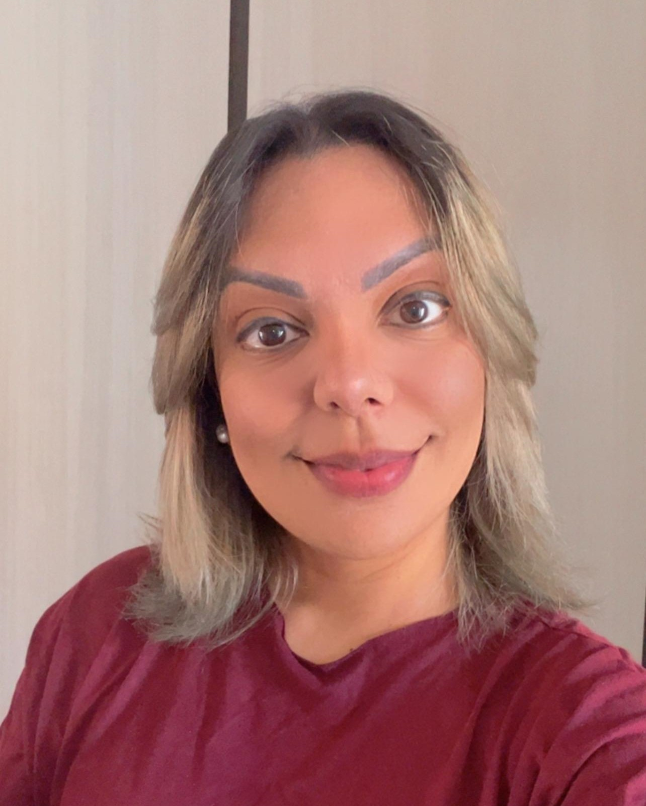
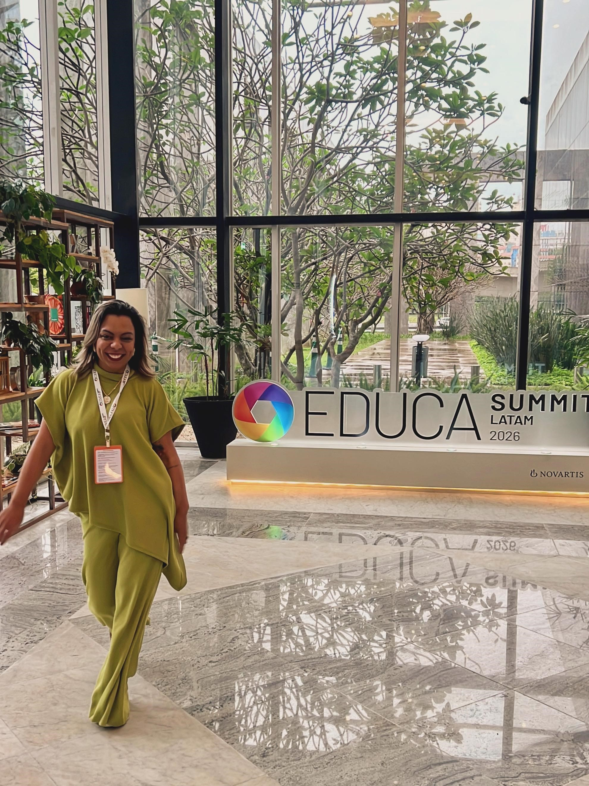
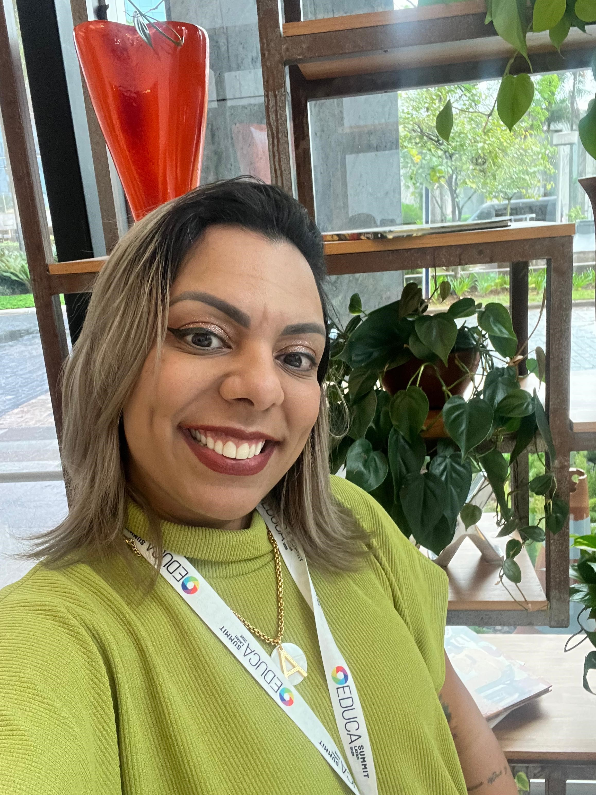
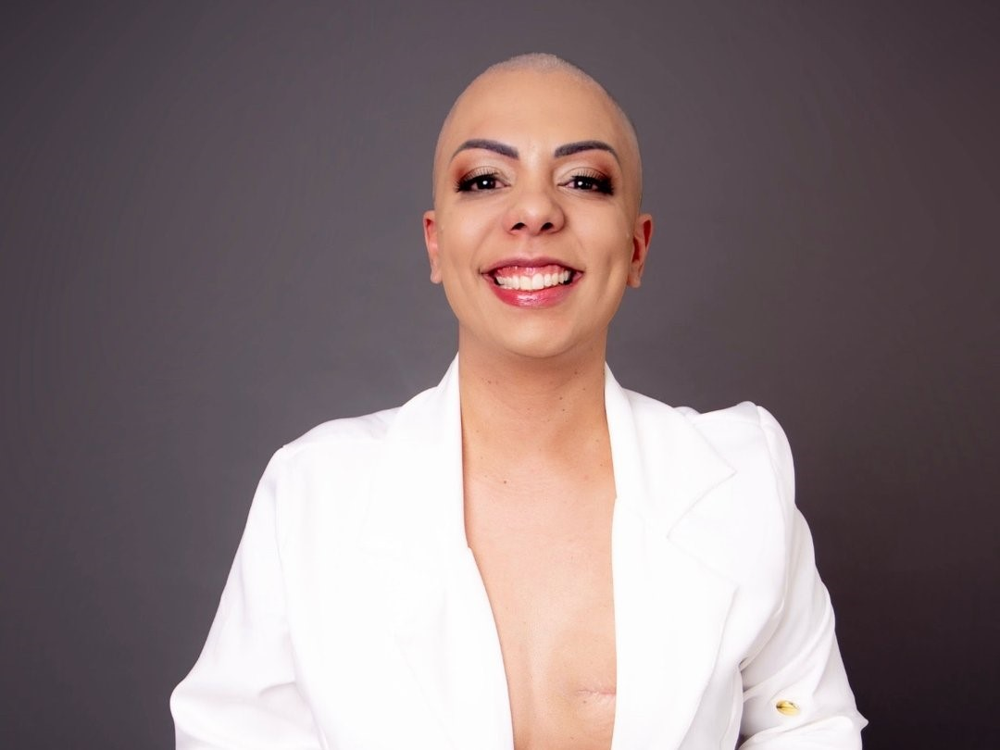
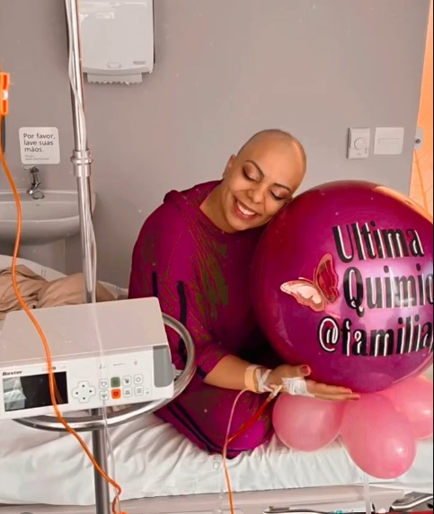
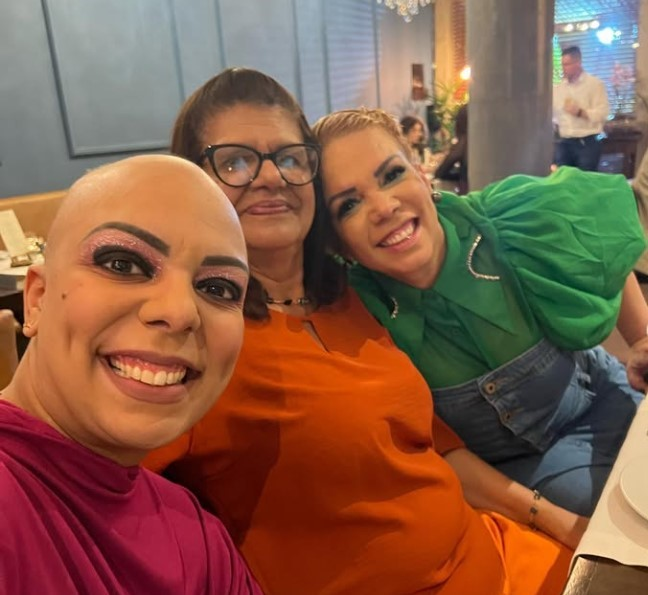
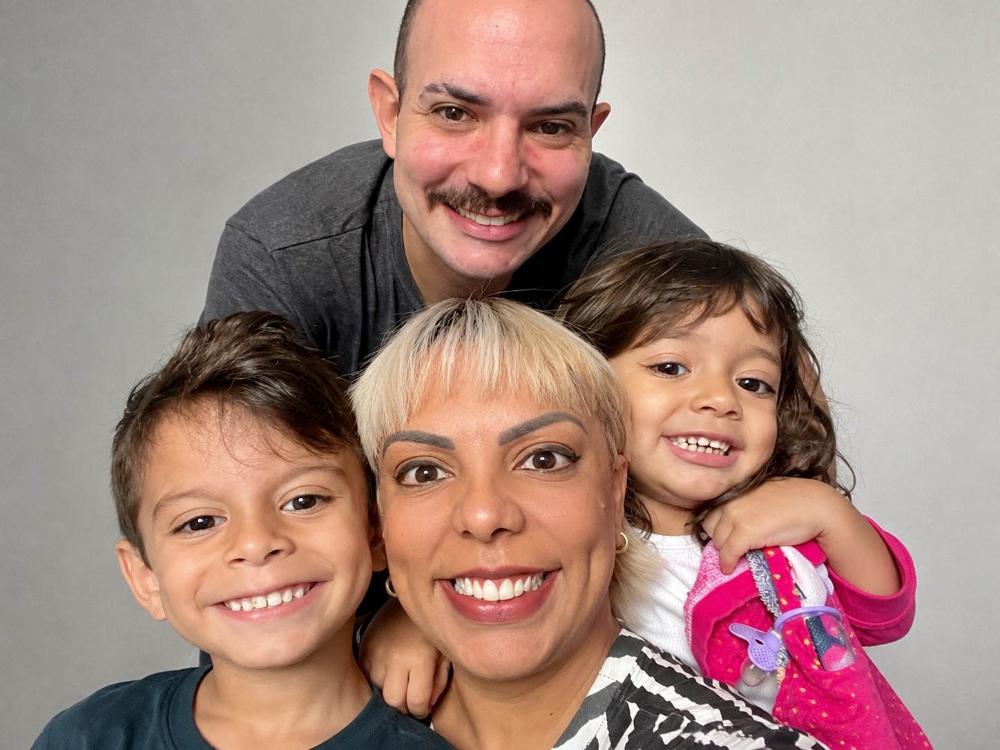

Amanda Paz
Superação, Doçura e Voz: A Inspiradora Jornada de Amanda Paz
Aos 32 anos, casada e mãe de duas crianças (Augusto e Mariah) e três cachorros, Amanda Paz carrega uma trajetória marcada por uma reviravolta profunda e por uma coragem extraordinária. Formada em Direito e em Libras, com especializações, e com uma passagem anterior pelas áreas de engenharia e petroquímica — onde foi a única mulher a trabalhar diretamente no campo —, sua vida deu uma guinada de 360 graus aos 28 anos, quando recebeu o diagnóstico de câncer, logo após o de sua mãe. Desse momento desafiador nasceu uma nova identidade profissional: hoje, ela atua como onco-influenciadora, compartilhando sua vivência e inspirando outras pessoas na internet, além de encontrar na produção artesanal de doces tanto uma terapia quanto uma fonte de sustento.
A veia empreendedora e o amor pela educação vêm de berço. Nascida em uma família de raízes empreendedoras e ligadas ao ensino, Amanda começou a trabalhar muito cedo: aos 18 anos, já lecionava na rede pública como professora substituta, paralelamente aos estudos em engenharia, técnica em mecânica e química. No entanto, sua veia para os negócios é antiga: informalmente, começou a vender doces e pirulitos ainda na infância, nos tempos de escola.
Registros da Trajetória

Participação marcante no Educa Summit Latam 2026, levando conhecimento e inspiração.
Momento de dedicação e compartilhamento de ideias em evento educacional.
Retrato de força, resiliência e a paz de quem venceu grandes batalhas.
A vitória da cura: o dia da última sessão de quimioterapia em 31 de agosto de 2023.
Amor que sustenta: abraço emocionado com a mãe e a avó em agosto de 2023.
Reunião familiar em 2025 celebrando a união, a vida e os novos recomeços.Principais Conquistas, Desafios e O Motor da Fé
- Conquistas Marcantes: Ser reconhecida pela prefeitura e por grandes laboratórios farmacêuticos, transformando sua voz na internet e sua história de superação em uma ferramenta de impacto e palestras. Além disso, vencer diariamente as limitações físicas para produzir seus doces é uma vitória constante.
- Maiores Desafios: Enfrentar um ambiente corporativo extremamente masculino na petroquímica, superar o diagnóstico de câncer mantendo a leveza e conciliar os cuidados com os filhos, o trabalho manual e a saúde.
- O Motor da Fé: Diante de todas as tempestades, desistir nunca esteve nos planos. É a fé inabalável que a move e a mantém firme.
Tendo como principais referências as mulheres de sua família — sua mãe, avó e tias —, que sempre foram exemplos de trabalho, amor, gentileza e perseverança diante das dificuldades, Amanda aprendeu que as tempestades sempre passam e que os momentos difíceis servem para nos tornar mais fortes.
Para ela, o papel de ser uma mulher que inspira ainda traz uma sensação de surpresa e profunda emoção:
"Para mim ainda é uma surpresa e causa uma grande emoção perceber que consigo ajudar outras mulheres a enfrentarem seus dias difíceis e batalhas internas. É algo que me traz muita felicidade e realização."
Encerrando seus conselhos para as meninas e mulheres que estão construindo os próprios caminhos, Amanda deixa uma mensagem poética e cheia de força: